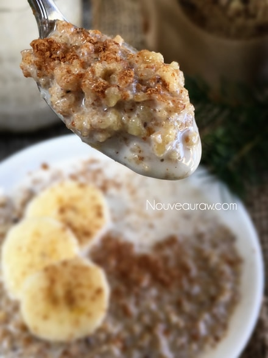

Warming Breakfast Muesli

raw / vegan / gluten-free
Don’t let these itty bitty nuggets scare you into thinking that they won’t provide a satisfying breakfast. Because that couldn’t be further from the truth.
In fact, this healthy breakfast recipe is full of protein, omega-3s, and fiber to regulate blood sugar and keep you fuller, longer. The bulk ingredient is oats, which are a good source of a soluble fiber called beta-glucan. This helps to slow down the digestion and absorption of carbohydrates. And the fact that we are soaking them prior to making the recipe ensures us that our bodies will more easily digest the oats.
I labeled this muesli a warming breakfast cereal, not only because a porridge-like consistency screams morning breakfast, but also because of the warming spices I used; ginger, cinnamon, cardamom, and black pepper.
I know what you are thinking… black pepper in a breakfast cereal? Trust me on this. Black pepper is a great aid to battling chest congestion, boosting appetite, improving digestion, and protecting you from the lurking army of germs and pollutants. (1)
But seriously, warming spices have a lot of healthy superpowers in them. Any warm spice can be used individually but why when they partner so well? Exactly, that’s what I thought too, so I brought them all together in this delicious, “nutty” breakfast cereal. I hope you enjoy this recipe. I decided to make several batches of this cereal to give as gifts over the holiday season, so keep that in mind… nothing beats homemade gifts from the heart. Please share your thoughts, comments, and questions below. I love hearing from you! amie sue
Yields roughly 3-4 cups
- 4 cups gluten-free, rolled oats, soaked
- 2 cups chopped raw walnuts, soaked
- 1/2 cup sweetened diced crystallized ginger
- 2 Tbsp psyllium husks
- 2 Tbsp cold-pressed coconut oil, melted
- 1/3 cup+2 Tbsp maple syrup
- 1 tsp maple extract
- 1 tsp Himalayan pink salt
- 1/2 tsp ground cardamom
- 1/4 tsp ground Ceylon cinnamon
- 1/4 tsp ground ginger
- 1/4 tsp freshly cracked black pepper
Preparation:
- Soak, drain, and rinse oats. You want to keep rinsing until the drain water is clear.
- In a large bowl mix together oats, walnuts, dried ginger, psyllium, coconut oil, maple syrup, maple extract, cardamom, ginger, cinnamon, pepper, and salt.
- Use your hands to mix this up… get everything well coated.
- Spread the cereal on the teflex sheet that comes with your dehydrator.
- If you don’t have teflex sheets, use parchment paper (don’t use wax paper as it will stick).
- Dry at 145 degrees (F) for 1 hour, then reduce to 115 degrees (F) for 4 hours. Flip the batter over onto the mesh sheet and peel the teflex sheet off and continue drying for 4-6 hours or until dry.
- Allow to cool for a few minutes and break into chunks.
- Place the cereal chunks in the food processor and pulse until it breaks down to a small-medium crumble.
- Store in an airtight container for several weeks on the counter or in the freezer for 1-3 months.
- To enjoy as muesli, add almond milk and let it sit for 30 minutes to overnight. It creates a wonderful porridge-like texture. It is great mixed up with yogurt or even fruit juice.

The Institute of Culinary Ingredients:
- To learn more about maple syrup by clicking (here).
- Why do I specify Ceylon cinnamon? Click (here) to learn why.
- What is Himalayan pink salt and does it really matter? Click (here) to read more about it.
- Are oats gluten-free? Yes, read more about that (here).
- Are oats raw? Yes, they can be found. Click (here) to learn more.
- Do I need to soak and dehydrate oats? Not required but recommended. Click (here) to see why.
Culinary Explanations:
- Why do I start the dehydrator at 145 degrees (F)? Click (here) to learn the reason behind this.
- When working with fresh ingredients, it is important to taste test as you build a recipe. Learn why (here).
- Don’t own a dehydrator? Learn how to use your oven (here). I do however truly believe that it is a worthwhile investment. Click (here) to learn what I use.
© AmieSue.com